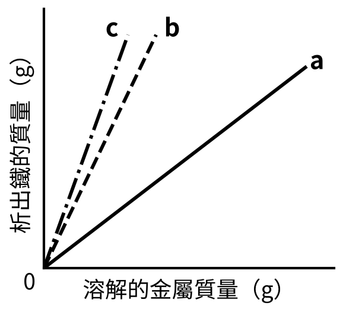

基礎題
在日常生活中，下列何者不屬於氧化還原反應？
- (A) 鐵生鏽
- (B) 酸雨腐蝕大理石雕像
- (C) 呼吸作用
- (D) 水果腐爛
- (E) 煙火秀
看答案與詳解
答案：(B)
(A) 鐵與氧結合、(C) 葡萄糖被氧化、(D) 有機物被氧化分解、(E) 燃燒，都是氧化還原。
下列何者不是氧化還原反應？
- (A) 蠟燭在空氣中燃燒
- (B) 鐵在潮溼的空氣中生鏽
- (C) 綠色植物行光合作用
- (D) 手機鋰電池的充電
- (E) 胃藥與胃酸的反應
看答案與詳解
答案：(E)
(C) 光合作用：6CO2＋6H2O → C6H12O6＋6O2，CO2 被還原、H2O 被氧化。
(D) 充電是電解，電極上發生氧化與還原。
(E) 胃藥（如 Mg(OH)2、NaHCO3）中和胃酸 HCl，屬酸鹼中和，沒有電子轉移，選 (E)。
自然界中，氧化還原反應扮演著重要的角色，下列有關碳循環的過程，何者沒有牽涉到氧化還原反應？
- (A) 細胞呼吸是利用葡萄糖反應產生二氧化碳，並釋出能量
- (B) 生物體內的碳水化合物逐漸在地層中沉積，最後轉變成煤
- (C) 煤和石油在空氣中燃燒產生二氧化碳
- (D) 二氧化碳溶於水，與鈣離子（Ca2+）結合，以碳酸鈣沉澱的方式積存於海底
- (E) 二氧化碳經由光合作用轉變為葡萄糖，並釋放出氧氣
看答案與詳解
答案：(D)
(D) ✔ CO2＋H2O → H2CO3，再與 Ca2+ 生成 CaCO3，過程中各元素沒有得失電子（C 一直是 ＋4），是酸鹼與沉澱反應，不是氧化還原。
下列哪一個選項的化學反應不屬於氧化還原反應？
- (A) 2H2O2 → 2H2O＋O2
- (B) SnO2＋2C → Sn＋2CO
- (C) Ca(OH)2＋2HNO3 → Ca(NO3)2＋2H2O
- (D) 2N2H4＋N2O4 → 3N2＋4H2O
- (E) 2HBr＋H2SO4 → 2H2O＋Br2＋SO2
看答案與詳解
答案：(C)
(A) ✘ O：−1 → −2（H2O）與 0（O2），自身氧化還原。
(B) ✘ Sn：+4 → 0（被還原），C：0 → +2（被氧化）。
(C) ✔ 酸鹼中和，Ca＝+2、N＝+5、H＝+1、O＝−2 前後都不變，不是氧化還原。
(D) ✘ N2H4 中 N：−2 → 0；N2O4 中 N：+4 → 0。
(E) ✘ Br：−1 → 0（被氧化），S：+6 → +4（被還原）。
〔易錯〕有元素態（O2、Sn、C、N2、Br2）出現的反應一定是氧化還原；酸鹼中和不是。
反應 2Mg＋O2 → 2MgO 中，下列敘述何者正確？
- (A) Mg 得到電子
- (B) Mg 被還原
- (C) O2 是還原劑
- (D) Mg 是還原劑
- (E) O2 被氧化
看答案與詳解
答案：(D)
O2 → O2−：得到電子、被還原，是氧化劑。
反應 Fe2O3＋3CO → 2Fe＋3CO2，下列何者有誤？
- (A) 此為氧化還原反應
- (B) CO 具有還原力
- (C) Fe2O3 被還原為 Fe
- (D) Fe2O3 得到電子故為還原劑
- (E) CO 被氧化為 CO2
看答案與詳解
答案：(D)
(A)(B)(C)(E) 皆正確。
(D) ✘ 得到電子、本身被還原的物質是氧化劑，不是還原劑，選 (D)。
Mg(s)＋Cu2+(aq) → Cu(s)＋Mg2+(aq)反應過程中，下列敘述何者正確？
- (A) Mg 為氧化劑，被氧化
- (B) Cu 為氧化劑，被還原
- (C) Mg 被氧化，得到兩個電子
- (D) Cu2+為氧化劑，得到兩個電子
- (E) 反應進行的過程中溶液的顏色會愈來愈深
看答案與詳解
答案：(D)
Cu2+＋2e− → Cu（Cu2+ 得電子被還原，為氧化劑）
(A) ✘ Mg 是還原劑。
(B) ✘ 氧化劑是反應物 Cu2+，Cu 是產物。
(C) ✘ Mg 失去兩個電子。
(D) ✔
(E) ✘ 藍色的 Cu2+ 逐漸減少，Mg2+ 無色，顏色愈來愈淡。
下列有關氧化還原的敘述何者正確？
- (A) 氧化劑必含有氧
- (B) 氧化必與氧結合
- (C) 氧化得到的電子總數等於還原失去的電子總數
- (D) 氧化力大的元素適合當氧化劑
- (E) 得到電子為還原劑
看答案與詳解
答案：(D)
(B) ✘：廣義的氧化是失去電子，不一定與氧結合。
(C) ✘：說反了；應是氧化「失去」的電子總數等於還原「得到」的電子總數。
(D) ✔：氧化力大，容易搶電子，適合當氧化劑。
(E) ✘：得到電子的是氧化劑（本身被還原）。
把點燃的鎂帶放進二氧化碳的集氣瓶中，發現鎂帶繼續燃燒，反應後瓶壁上有黑色斑點附著。試問下列敘述何者正確？
- (A) 此反應的平衡反應式為：Mg＋CO2 → MgO＋CO
- (B) 瓶壁上黑色斑點為氧化鎂
- (C) 在這反應中鎂進行還原反應
- (D) 儲存鎂粉的倉庫失火時，可用二氧化碳滅火器來滅火
- (E) CO2 為氧化劑
看答案與詳解
答案：(E)
(A) ✘ 產物是碳（黑色斑點），不是 CO。
(B) ✘ MgO 是白色，黑色斑點是碳。
(C) ✘ Mg 得到氧，被氧化。
(D) ✘ 鎂能在 CO2 中燃燒，不能用 CO2 滅火器。
(E) ✔ CO2 失去氧（被還原），是氧化劑。
人體的血紅素中含有鐵(II)離子，若誤食亞硝酸鹽，會導致血紅素中的鐵(II)離子轉化成鐵(III)離子而中毒，服用維生素 C 則可解毒。下列相關的敘述中，哪些正確？（多選）
- (A) 亞硝酸鹽作為還原劑
- (B) 維生素 C 作為還原劑
- (C) 鐵(II)離子為氧化劑
- (D) 在中毒的反應中，亞硝酸鹽會失去電子
- (E) 在解毒的反應中，維生素 C 會失去電子
看答案與詳解
答案：(B)(E)
解毒：維生素 C 把 Fe3+ 還原回 Fe2+，維生素 C 失去電子被氧化，是還原劑。
(A) ✘ 亞硝酸鹽為氧化劑。(B) ✔ (C) ✘ Fe2+ 為還原劑。(D) ✘ 亞硝酸鹽得到電子。(E) ✔
已知電解食鹽水反應為：NaCl(aq)＋H2O(l) → NaOH(aq)＋H2(g)＋Cl2(g)（尚未平衡），下列何者正確？
- (A) 食鹽中的 Na+ 被還原
- (B) 食鹽中的 Cl− 被氧化
- (C) 水未參與氧化還原
- (D) 此反應為酸鹼反應
- (E) 產物中氫氣莫耳數為氯氣的 2 倍
看答案與詳解
答案：(B)
(A) ✘ Na+ 沒有變化；被還原的是 H2O（H → H2）。
(B) ✔ Cl− 失電子變成 Cl2，被氧化。
(C) ✘ 水被還原生成 H2。
(D) ✘ 為氧化還原（電解）反應。
(E) ✘ H2：Cl2＝1：1。
下列哪一種金屬不會與稀鹽酸反應產生氫氣？
- (A) Mg
- (B) Zn
- (C) Fe
- (D) Sn
- (E) Ag
看答案與詳解
答案：(E)
Mg、Zn、Fe、Sn 的活性都比氫大；Ag 的活性比氫小，不與稀鹽酸反應。
下列各組金屬的活性大小關係，何者正確？
- (A) K＞Na＞Ca
- (B) Mg＞Al＞Zn
- (C) Fe＞Zn＞Cu
- (D) Cu＞Hg＞Pb
- (E) Ag＞Cu＞Au
看答案與詳解
答案：(B)
(A) ✘ Ca＞Na (B) ✔ (C) ✘ Zn＞Fe (D) ✘ Pb＞Cu＞Hg (E) ✘ Cu＞Ag
已知常見金屬失去電子由易到難的順序為：K、Ca、Na、Mg、Al、Mn、Zn、Fe、Pb、Cu、Hg、Ag。下列哪一種化合物的水溶液不可儲放於鍍鋅的容器內？
- (A) CaCl2
- (B) AgNO3
- (C) KNO3
- (D) (NH4)2SO4
- (E) Al(OH)3
看答案與詳解
答案：(B)
Zn＋2Ag+ → Zn2+＋2Ag，容器被腐蝕。
Ca2+、K+、Al3+ 的金屬活性都比 Zn 大，不會被 Zn 置換，選 (B)。
進階題
將鋅片分別放入下列水溶液中，哪一個不會發生反應？
- (A) CuSO4
- (B) AgNO3
- (C) FeSO4
- (D) MgSO4
- (E) Pb(NO3)2
看答案與詳解
答案：(D)
Zn 的活性大於 Fe、Pb、Cu、Ag，可與它們的鹽溶液反應；Mg 的活性比 Zn 大，Zn 無法把 Mg2+ 還原，所以不反應。
有 X、Y、Z 三種金屬：① 把 X 放入 Y 的硝酸鹽水溶液中，X 表面有 Y 析出；② 把 Z 放入 X 的硝酸鹽水溶液中，沒有反應；③ Z 可與稀鹽酸反應產生氫氣，Y 則不行。三種金屬的活性大小順序為何？
- (A) X＞Y＞Z
- (B) X＞Z＞Y
- (C) Y＞X＞Z
- (D) Z＞X＞Y
- (E) Z＞Y＞X
看答案與詳解
答案：(B)
② Z 不能還原 X 的離子 → X＞Z
③ Z＞(H2)＞Y → Z＞Y
合併：X＞Z＞Y
把一根鐵釘放入硫酸銅水溶液中，靜置一段時間。下列敘述哪些正確？（Fe＝56，Cu＝64）（多選）
- (A) 鐵釘表面有紅色的銅析出
- (B) 溶液的藍色逐漸變淡
- (C) Fe 是氧化劑
- (D) Cu2+ 得到電子
- (E) 反應後溶液的質量增加
看答案與詳解
答案：(A)(B)(D)
(A) ✔ (B) ✔ 藍色的 Cu2+ 減少。
(C) ✘ Fe 失去電子，是還原劑。
(D) ✔ Cu2+ 得到電子被還原。
(E) ✘ 每溶入 56 g 的 Fe 就析出 64 g 的 Cu，溶液質量減少。
鋁熱反應 2Al＋Fe2O3 → Al2O3＋2Fe 可用來焊接鐵軌。下列敘述何者正確？
- (A) Al 是氧化劑
- (B) Fe2O3 是還原劑
- (C) Al 被還原
- (D) Fe2O3 被還原
- (E) 此反應不是氧化還原反應
看答案與詳解
答案：(D)
能發生是因為 Al 的活性比 Fe 大。
6.5 g 的鋅與足量的稀鹽酸完全反應：Zn＋2HCl → ZnCl2＋H2。反應中鋅一共失去多少莫耳的電子？（Zn＝65）
- (A) 0.050
- (B) 0.10
- (C) 0.20
- (D) 0.30
- (E) 0.40
看答案與詳解
答案：(C)
Zn → Zn2+＋2e−，每 1 mol Zn 失去 2 mol 電子 → 0.20 mol
某些食物中富含油脂，而油脂類在空氣中會因為被氧化而產生酸性的產物，稱為油脂的酸敗。此外高溫的環境例如油炸的過程，也會加速酸敗的發生。酸敗的食物或油脂會產生難聞的氣味，即所謂的臭油味或油耗味，而且這些酸敗的產物也會對健康產生不良影響。為了避免酸敗，延長食物與油脂類的保存期限，食品製造商常會在食品或油脂類中添加可食用的「抗氧化劑」，如維生素 E。根據上文判斷，下列敘述哪些正確？（應選 3 項）（多選）
- (A) 抗氧化劑本質上即是一種還原劑
- (B) 抗氧化劑比食物中的油脂更容易被氧化
- (C) 食物中的油脂是比抗氧化劑更強的還原劑
- (D) 油脂酸敗的產物，可與鹼性物質作用
- (E) 在酸敗的反應中，油脂會得到電子
看答案與詳解
答案：(A)(B)(D)
(A) ✔ 抗氧化劑自己被氧化，使別人不被氧化，就是還原劑。
(B) ✔ 它比油脂更容易被氧化，才能先消耗氧。
(C) ✘ 抗氧化劑才是較強的還原劑。
(D) ✔ 文中說酸敗產生酸性產物，酸可與鹼作用（中和）。
(E) ✘ 酸敗是油脂被氧化，油脂失去電子。
〔易錯〕被氧化的物質＝還原劑＝失去電子，三者是同一件事。
火箭中使用的燃料是偏二甲肼（CH3NH−NHCH3）和四氧化二氮（N2O4）。在火箭升空過程中，燃料發生反應：CH3NH−NHCH3＋2N2O4 → 2CO2＋3N2＋4H2O 釋出能量。下列敘述哪些正確？（應選 3 項）（多選）
- (A) 該燃料在燃燒過程中會製造溫室效應氣體
- (B) 該反應中 CH3NH−NHCH3 是氧化劑，N2O4 是還原劑
- (C) CO2 是還原產物，N2 是氧化產物
- (D) 每消耗 4 mol 的 N2O4，會有 168 g N2 生成
- (E) 反應的 ΔH＜0
看答案與詳解
答案：(A)(D)(E)
(B) ✘ 偏二甲肼中 C（−2 → ＋4）、N（−2 → 0）氧化數升高，是還原劑；N2O4 中 N（＋4 → 0）被還原，是氧化劑。
(C) ✘ CO2 由 C 被氧化而來，是氧化產物；N2 同時來自被氧化的 N 與被還原的 N，既是氧化產物也是還原產物。
(D) ✔ N2O4：N2＝2：3，4 mol N2O4 生成 6 mol N2 × 28 g／mol＝168 g。
(E) ✔ 釋出能量，為放熱反應，ΔH＜0。
大考／素養題
暖暖包的主要成分是鐵粉、水、食鹽與活性碳，撕開包裝接觸空氣後就會發熱。下列敘述何者正確？
- (A) 鐵粉是還原劑
- (B) 氧氣被氧化
- (C) 此反應為吸熱反應
- (D) 食鹽是氧化劑
- (E) 使用後包內固體的總質量減少
看答案與詳解
答案：(A)
(A) ✔ 鐵失去電子被氧化，是還原劑。
(B) ✘ 氧氣得到電子被還原。
(C) ✘ 放熱。
(D) ✘ 食鹽只是加快反應，氧化劑是氧氣。
(E) ✘ 鐵與氧結合，固體質量增加。
漂白水的有效成分是次氯酸鈉（NaClO），可用來殺菌與漂白。這主要是利用次氯酸鈉的哪一種性質？
- (A) 強酸性
- (B) 強還原力
- (C) 強氧化力
- (D) 揮發性
- (E) 吸水性
看答案與詳解
答案：(C)
切開的蘋果放在空氣中，切面很快變成褐色；如果先把切片泡在維生素 C 水溶液中，就不容易變色。
(1) 蘋果切面變褐，是其中的成分與空氣中的哪一種物質反應？此成分被氧化還是被還原？
(2) 維生素 C 在這裡扮演氧化劑還是還原劑？
(3) 請說明維生素 C 能防止蘋果變色的原因。
看答案與詳解
答案：(1) 氧氣；被氧化 (2) 還原劑 (3) 維生素 C 比蘋果的成分更容易被氧化，會先與氧反應
(2) 還原劑（抗氧化劑）。
(3) 維生素 C 比蘋果的成分更容易被氧化，會搶先與氧氣反應（自己被氧化），蘋果的成分因此不被氧化。
將鎂、鋅、鋁分別加入過量的 FeSO4 水溶液中，金屬溶解的質量與析出鐵的質量關係如附圖。圖中 a、b、c 三條直線所代表的金屬依序為何？（原子量：Mg＝24，Al＝27，Fe＝56，Zn＝65）

- (A) 鎂、鋅、鋁
- (B) 鎂、鋁、鋅
- (C) 鋁、鎂、鋅
- (D) 鋅、鋁、鎂
- (E) 鋅、鎂、鋁
看答案與詳解
答案：(E)
Zn＋Fe2+ → Zn2+＋Fe：65 g Zn 析出 56 g Fe → 0.86
Mg＋Fe2+ → Mg2+＋Fe：24 g Mg 析出 56 g Fe → 2.33
2Al＋3Fe2+ → 2Al3+＋3Fe：54 g Al 析出 168 g Fe → 3.11
斜率 a＜b＜c → a 為鋅、b 為鎂、c 為鋁